Drowsiness detection you can trace and question
Tests acted drowsiness on a four-subject NTHU subset, shows why a frame CNN did not travel to a new driver, and runs a causal landmark BiLSTM from the webcam. Heart-rate and vehicle signals are replayed context, not a second live fatigue test.
Why a drowsiness score needed a harder test
Four limits on what a camera model of acted drowsiness is allowed to claim.
The labels are acted, not a clinical test
The vision set is a local NTHU-DDD copy. Each frame is marked drowsy or not drowsy for the session. That is acted drowsiness in front of a camera, not a roadside or clinical fatigue score.
Four drivers cannot stand in for every driver
The copy contains subjects 001, 002, 005 and 006. A model can look strong when the same people appear in training and testing, and still fail on a person it has never seen.
The first vision split still shared subjects
The locked landmark model was scored on a session split whose test sessions came from people who were also in training. That number describes the split. It does not describe a new driver.
A camera score is not yet a fatigue decision
The research model outputs a continuous P(Drowsy). The prototype turns a fused score into an alert only after it has stayed high. Those are different claims, and neither one is a live accuracy trial.
Frame CNNs, embedding sequences and landmark sequences were all scored on the same four subjects, but they were not the same experiment. The early landmark result used a session split with subject overlap and a scaler fit on the whole table. Physiology predicts labels written from the same signals. The vehicle model predicts a driving-behaviour label, and a later audit found that label pointing the opposite way from speed and throttle. No file in the project is a synchronized recording of one driver on camera, on a wearable and on the bus CAN bus at the same time.
Objectives
- Describe the four-subject NTHU subset and score vision models with the held-out driver left out.
- Train a frame-level CNN baseline and test whether its embeddings separate drowsiness from identity.
- Test whether a temporal model on those embeddings improves on the frame CNN.
- Build a landmark sequence from eye opening, mouth opening and head tilt, then remove the scaler leak.
- Compare the landmark BiLSTM with the CNN tracks under one leave-one-subject-out protocol.
- Wire a live webcam path to the deployment checkpoint, and keep physiology and CAN as labelled replays.
Research questions
- RQ1Does a frame CNN trained on three of these subjects recognise drowsiness in the fourth?
- RQ2Do the CNN embeddings cluster by drowsiness, or by who is in the frame?
- RQ3Does a BiLSTM on those embeddings beat the frame CNN under the project’s own decision rule?
- RQ4After the scaler is fit on training data only, does a landmark sequence rank above the CNN tracks?
- RQ5What does the corrected Vision V2 leave-one-subject-out result support, once window construction is audited?
- RQ6Which signals in the prototype are live, and which are replayed from other datasets?
How the research was carried out
Leave-one-subject-out asks whether the model still works when the driver changes. With only four people, that answer stays inside this subset.
Vision models are scored by holding out one of the four subjects. Training never sees that person’s frames.
After the leak was found, feature scaling for the landmark model is fit on training windows only.
Vision V2 drops the full-table scaler and builds the 41 features from past frames on a 30 Hz grid.
The landmark BiLSTM, the frame CNN and the CNN-plus-BiLSTM were re-scored on the same four held-out subjects.
Scaler leakage, label rules, CAN wording and the way 90-frame windows were built were checked after the models existed.
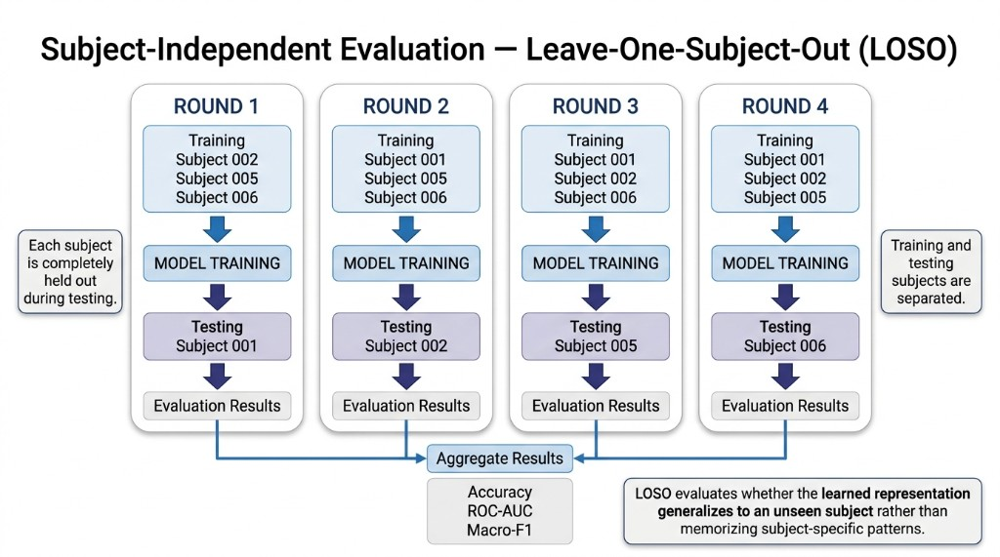
Reading the evaluation
One subject is completely absent from training in each round. Round 1 tests subject 001, round 2 tests 002, round 3 tests 005, and round 4 tests 006. The fold scores are then averaged. That is how this page asks whether a representation travels to an unseen person. The numbers for those folds are in the landmark and results sections.
One research path, one live path
Vision, physiology and driving context meet in one score, then a decision engine, then the dashboard. The diagram is the architecture. It is not an accuracy claim.
The multimodal layout combines the camera, the physiological stream and the driving-context stream before one fatigue decision.
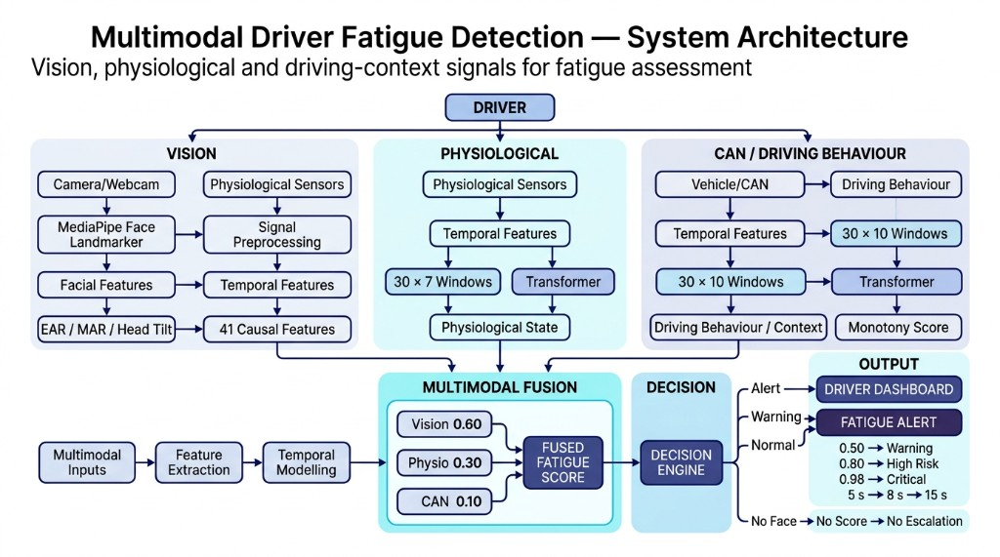
Reading the architecture
Vision contributes P(Drowsy) from EAR, MAR, head tilt and 41 causal features. Physiology contributes a Transformer score on 30×7 windows. CAN contributes a monotony score from 30×10 behaviour windows, not a drowsiness probability. Those three weights are 0.60, 0.30 and 0.10. In the running prototype only the webcam is live. Physiology and CAN are held-out replays. The gates drawn as 0.50, 0.80 and 0.98, held for 5 s, 8 s and 15 s, are the same thresholds as the decision table below. No face still means no score and no escalation.
Research pipeline
NTHU frames, then a representation, then a model, then a subject held out. CNN and landmark tracks are reported side by side.
- 1Start from the local NTHU frames and the filename labels drowsy and not drowsy.
- 2Train a MobileNetV2 frame CNN with leave-one-subject-out, then inspect embeddings, probes and Grad-CAM.
- 3Try a temporal model on the CNN embeddings. Keep it only if the project’s decision file says it improved.
- 4Extract EAR, MAR and head tilt, engineer a 41-feature sequence, and train a BiLSTM.
- 5Correct the full-table scaler, then score subject-out folds.
- 6Rebuild the features so they cannot see future frames, and report Vision V2 leave-one-subject-out separately from the live checkpoint.
Live prototype
Webcam to MediaPipe, then the API, then the 90×41 BiLSTM. Physiology and CAN join only as replay.
- 1The browser opens the webcam and runs MediaPipe Face Landmarker on the video.
- 2It sends EAR, MAR, head tilt and whether a face was found to POST /fatigue/vision/tick.
- 3The API places those samples on a 30 Hz grid and builds 41 causal features, including blinks.
- 4A 90-step window goes through the deployment BiLSTM, which returns a continuous P(Drowsy).
- 5Physiology and CAN, when their replay files are present, contribute their own scores.
- 6The fused score enters the decision engine. No face means no score and no escalation.
A four-subject acted set
The vision work uses a local NTHU-DDD image copy: 66,521 JPEG frames, 30,491 alert (not drowsy) and 36,030 drowsy. Subjects 003 and 004 are not in this copy.
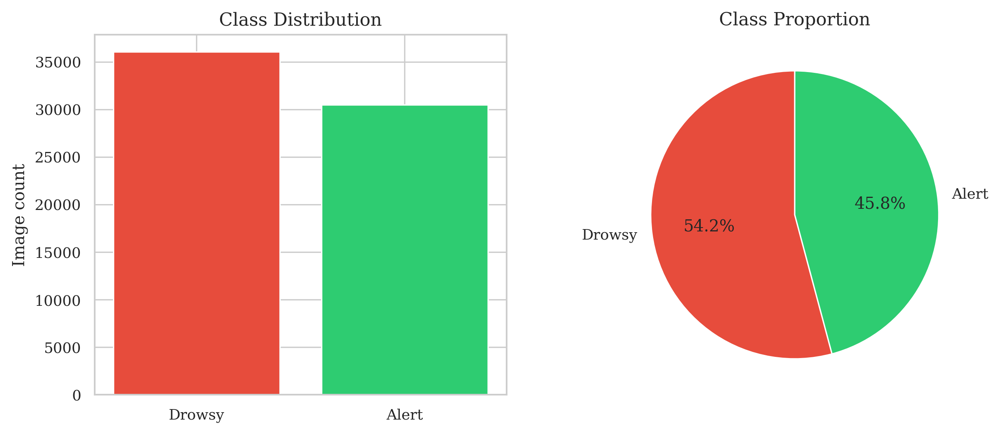
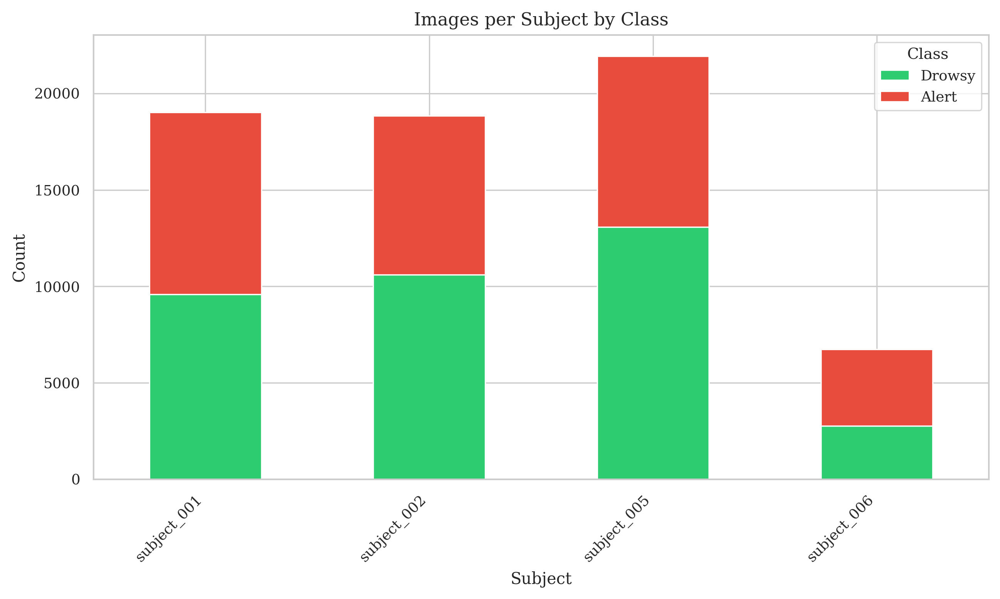
| Subject | Alert | Drowsy | Frames | Conditions |
|---|---|---|---|---|
| 001 | 9,432 | 9,584 | 19,016 | 8 |
| 002 | 8,237 | 10,596 | 18,833 | 8 |
| 005 | 8,846 | 13,087 | 21,933 | 8 |
| 006 | 3,976 | 2,763 | 6,739 | 3 |
Subjects 001, 002 and 005 each have eight filename conditions, mixing glasses with yawning, nodding and sleepy combinations. Subject 006 has three. The landmark table later collapsed some of those filenames into 16 session ids. The image counts above follow the filenames.
What the face measurements already show
Before any network, eye opening and mouth opening differ between the acted classes. These histograms are from the landmark extraction, not from the CNN.
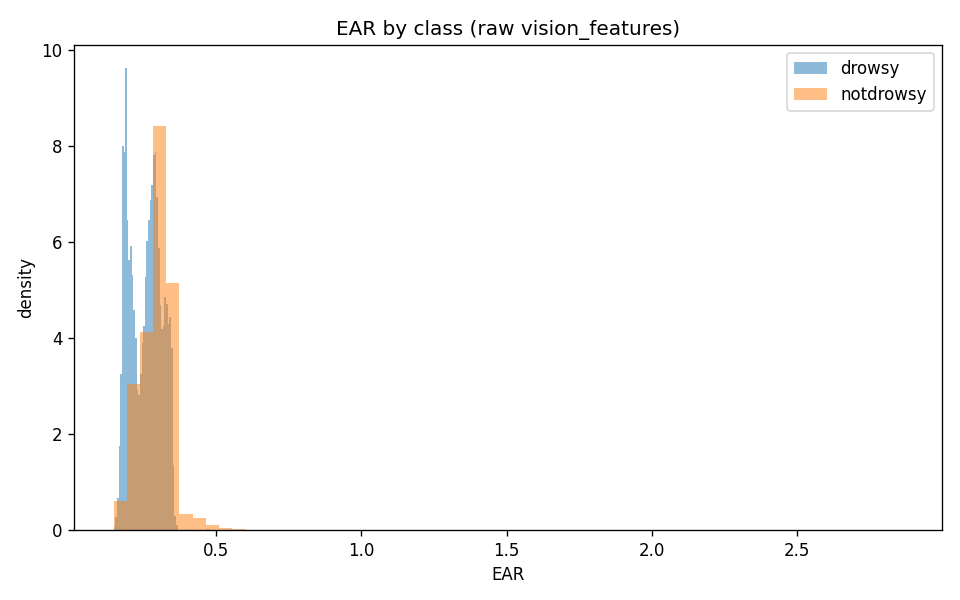
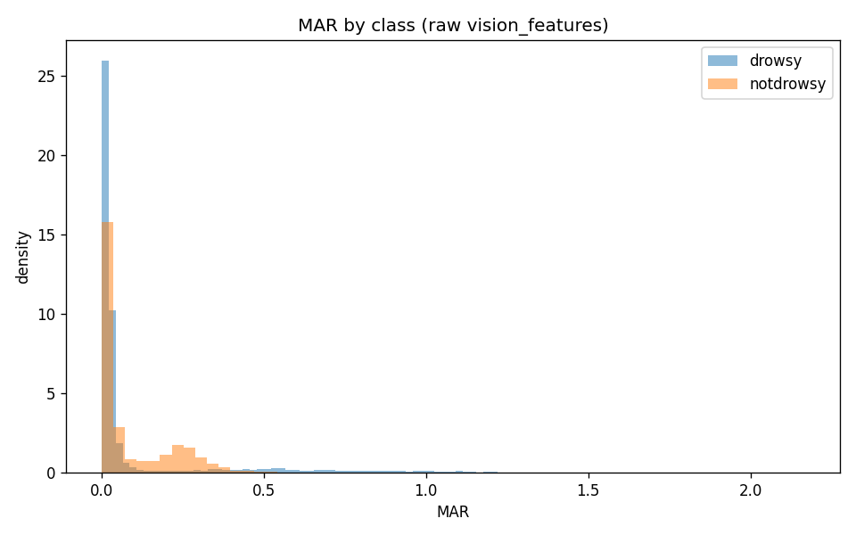
The frame CNN did not travel
MobileNetV2 was trained on 192-pixel frames with leave-one-subject-out. Each fold tests a person who was absent from training. The report’s recommendation is that this baseline is not yet suitable.
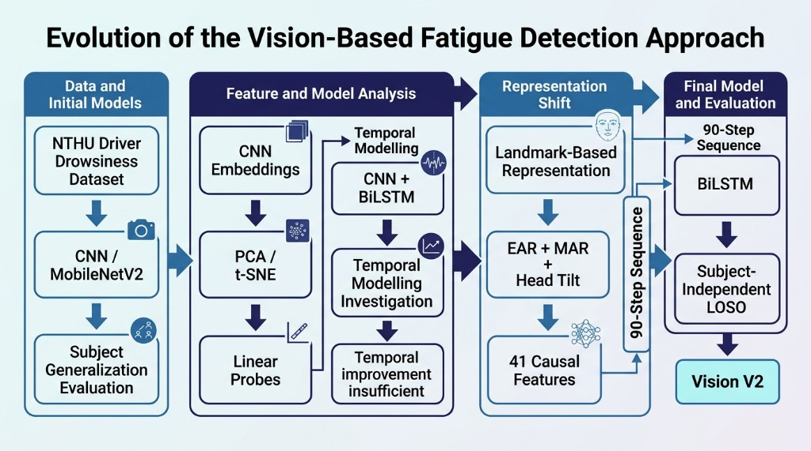
Reading the progression
The frame CNN and its embeddings were inspected with PCA, t-SNE and linear probes. A BiLSTM on those embeddings did not improve on the frame model, so that temporal track was dropped. The work then moved to landmarks: EAR, MAR and head tilt, expanded to 41 causal features, read as a 90-step sequence by a BiLSTM, and scored with subject-out evaluation. Vision V2 is that corrected landmark model. The plots under this diagram are the measurements behind those steps.
LOSO means
Accuracy 0.560 and ROC-AUC 0.644 are the headline means from the 14 July 2026 training report. Macro-F1 is 0.462. A later subject study kept the same ROC-AUC and marked the frame CNN not ready.
| Metric | Value |
|---|---|
| Accuracy | 0.560 |
| ROC-AUC | 0.644 |
| Macro-F1 | 0.462 |
| Balanced accuracy | 0.554 |
| Written recommendation | Not yet suitable |
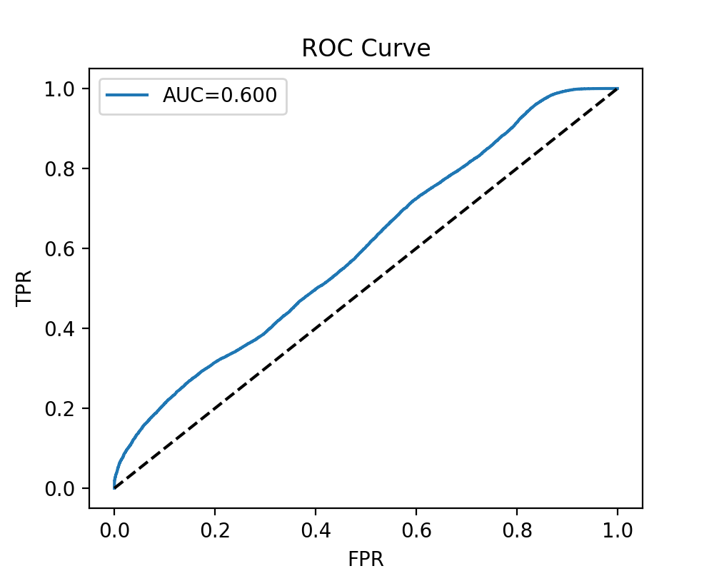
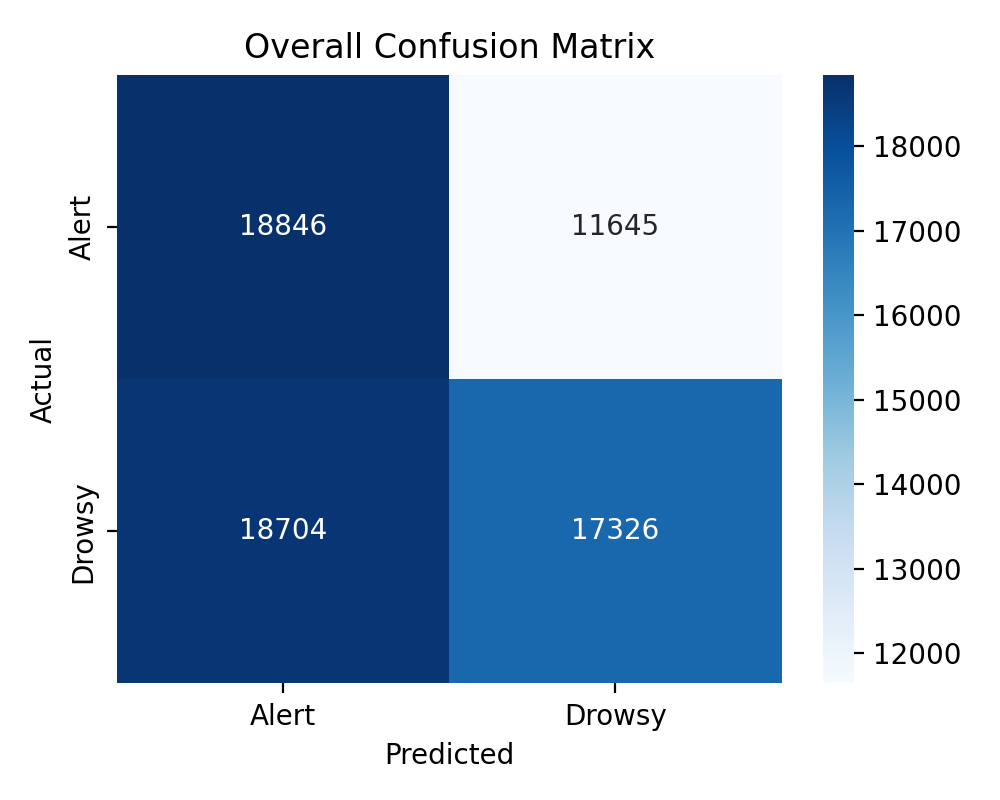
Reading the baseline
The curves sit above chance and well below a model that would be ready to deploy. The worst subject in the follow-up study was 001 and the best was 006. Failures lined up with driving condition as well as with identity. The weakest condition named in that summary is no-glasses nonsleepy combination.
Embeddings follow the person
A frozen linear probe on the embeddings reached F1 0.413. Fine-tuning the probe fell to 0.347. The best crop setting in that ablation was the full frame. The study marked the embeddings not ready for a CNN-BiLSTM.
| Check | Result |
|---|---|
| Frozen linear probe | 0.413 |
| Fine-tuned linear probe | 0.347 |
| Best face crop in that study | Full frame |
| Frame-level CNN readiness | Not ready |
| Embeddings ready for a CNN-BiLSTM | Not ready |
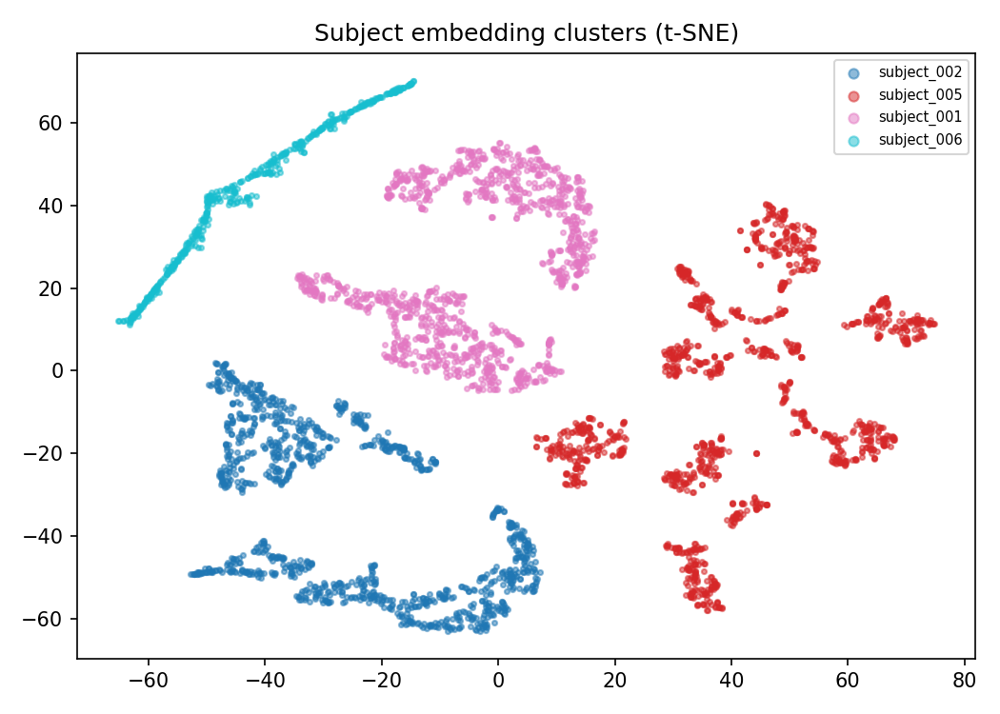
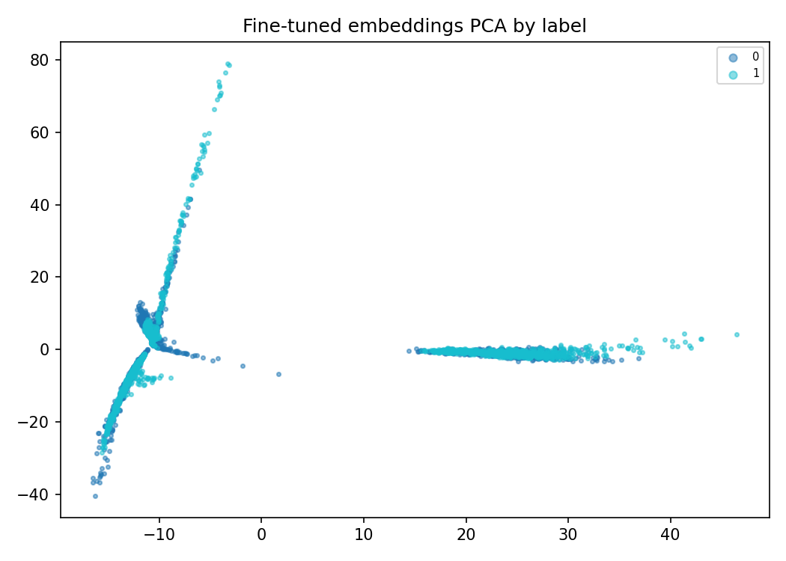
Reading the embedding plot
The t-SNE forms separate clouds for subjects 001, 002, 005 and 006. A representation that sorts people this cleanly can score well on a split that reuses those people, and still fail the subject who was held out. That is the generalisation problem the CNN track ran into.
A temporal model on the same embeddings
The feasibility chart compares the single-frame CNN with the best classical temporal model from that study. The later Prompt-3 BiLSTM is a different bar, and it is the one the decision file rejects.
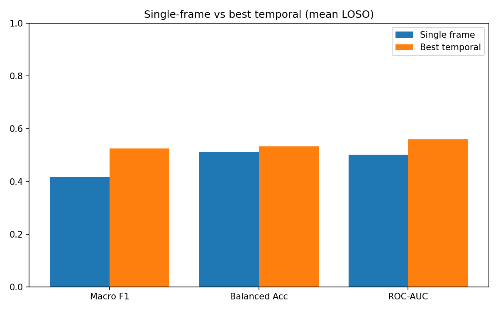
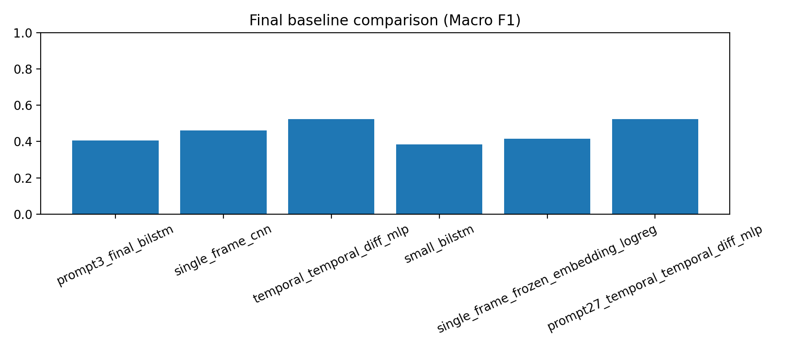
| Model | Macro-F1 |
|---|---|
| Prompt-3 CNN + BiLSTM | 0.406 |
| Single-frame CNN baseline | 0.462 |
| Frozen-embedding logistic probe | 0.416 |
| Earlier temporal MLP baseline | 0.525 |
A design we tried and dropped
The embedding BiLSTM was the natural next step after the frame CNN: drowsiness unfolds over time, so a sequence model should help. The feasibility BiLSTM on those embeddings reached a mean macro-F1 of 0.384. The later Prompt-3 model reached 0.406, below the single-frame CNN at 0.462 and below the earlier temporal MLP at 0.525. It beat that temporal baseline on none of the four folds. The decision file records q1_temporal_modelling_improved as NO. The embedding sequence was kept as a negative result, not as the vision model.
Where the CNN was looking
Grad-CAM overlays from the CNN subject-generalisation outputs. They show the spatial support of a prediction. They are not a medical explanation.
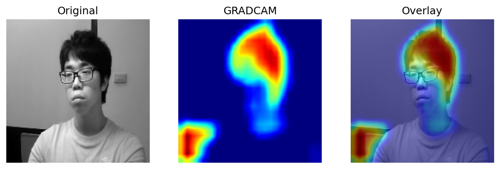
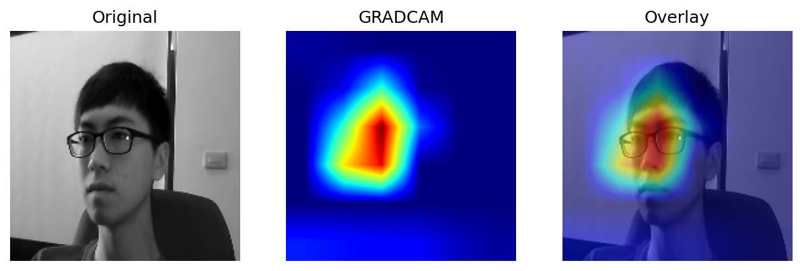
Reading the overlays
The written subject-generalisation summary attributes the weak leave-one-subject-out result to condition-linked failures and to subject identity shift. These two overlays agree with that reading in a simple way: a correct example lights the hair and forehead, and an incorrect example lights the wall. The network is not behaving like an eye-only detector. The Grad-CAM report is supporting evidence for that CNN failure, not a second accuracy number.
A landmark sequence, then a corrected one
Eye Aspect Ratio, Mouth Aspect Ratio and head tilt are computed from MediaPipe landmarks. Vision V2 expands them to 41 causal features on a 30 Hz grid and reads 90 steps with a BiLSTM.
Eye Aspect Ratio
Six landmarks around each eye. A smaller ratio means the eye is more closed. The live page and the research extractor use the same indices.
Mouth Aspect Ratio
The opening between the lips divided by the width of the mouth. It is one of the base signals, not a yawn label by itself.
Head tilt
The angle between the outer corners of the eyes. It carries nod and lean, which a single cropped face can miss.
41 causal features
V2 expands those bases with blink rate, blink duration and rolling statistics. Each value uses only frames already seen.
90-step BiLSTM
Two bidirectional LSTM layers, 128 then 64, then a small dense layer and a sigmoid. The output is P(Drowsy), not a hard class.
Thresholds do not travel
The fold thresholds on V2 were 0.02, 0.98, 0.98 and 0.88. A high ROC-AUC can still miss drowsy frames when the threshold was chosen on other people.
The first split was too kind
The locked BiLSTM was the best of the May landmark bake-off on drowsy recall, at accuracy 0.628 and ROC-AUC 0.945. Test sessions still belonged to subjects who appeared in training, and the first feature scaler was fit on all 66,521 rows. Refitting that scaler on training data only, on the same split, moved accuracy to 0.591 and ROC-AUC to 0.878.
| Version | Accuracy | Drowsy recall | ROC-AUC | Threshold |
|---|---|---|---|---|
| Locked V1, full-table scaler | 0.628 | 0.412 | 0.945 | 0.98 |
| Same split, train-only scaler | 0.591 | 0.354 | 0.878 | 0.96 |
Same subjects, three representations
The 22 August comparison re-scored three saved tracks on the same held-out subjects. ROC-AUC does not depend on the threshold. Under that ranking the landmark BiLSTM leads on every subject. Mean ROC-AUC is 0.932 for landmarks, 0.644 for the frame CNN and 0.586 for the CNN-plus-BiLSTM. The inputs are still different: 41 landmark features, a raw frame, and a 1,280-d embedding sequence.
| Track | ROC-AUC | PR-AUC | Macro-F1 |
|---|---|---|---|
| A′ landmark BiLSTM | 0.932 | 0.954 | 0.710 |
| B′ MobileNetV2 CNN | 0.644 | 0.668 | 0.479 |
| C′ CNN + BiLSTM | 0.586 | 0.615 | 0.406 |
| Held-out subject | Landmark | CNN | CNN + BiLSTM |
|---|---|---|---|
| 001 | 0.995 | 0.609 | 0.570 |
| 002 | 0.992 | 0.591 | 0.642 |
| 005 | 0.769 | 0.603 | 0.448 |
| 006 | 0.973 | 0.774 | 0.684 |
Vision V2, subject by subject
V2 removes the full-table scaler, uses causal statistics, and chooses each fold’s threshold on validation only: maximise drowsy recall while alert recall stays at least 0.88. Mean ROC-AUC is 0.898, mean accuracy 0.756, mean macro-F1 0.738. This is a different pipeline from the 0.932 comparison above, so the two ROC-AUC figures are not a before-and-after of the same model.
| Fold | Subject | Threshold | Accuracy | Drowsy recall | Alert recall | ROC-AUC | Macro-F1 |
|---|---|---|---|---|---|---|---|
| 1 | 001 | 0.02 | 0.6161 | 0.2385 | 1.0000 | 0.9589 | 0.5530 |
| 2 | 002 | 0.98 | 0.9136 | 0.9087 | 0.9200 | 0.9748 | 0.9125 |
| 3 | 005 | 0.98 | 0.6476 | 0.6325 | 0.6702 | 0.7221 | 0.6434 |
| 4 | 006 | 0.88 | 0.8474 | 0.8673 | 0.8339 | 0.9381 | 0.8441 |
| Metric | Mean | Lowest fold | Highest fold |
|---|---|---|---|
| Accuracy | 0.756 | 0.616 | 0.914 |
| Drowsy recall | 0.662 | 0.238 | 0.909 |
| ROC-AUC | 0.898 | 0.722 | 0.975 |
| PR-AUC | 0.926 | 0.840 | 0.978 |
| Macro-F1 | 0.738 | 0.553 | 0.912 |
Reading the V2 table
Subject 002 is strong at both ranking and the chosen threshold. Subject 001 ranks well, ROC-AUC 0.959, and then the validation threshold of 0.02 keeps almost every alert frame while drowsy recall falls to 0.238. The median threshold across folds is 0.93. The project notes say not to deploy that median as a global cutoff.
What a 90-step window actually contains
The grid is 30 Hz, so 90 steps cover three seconds of that grid. A later audit of the landmark table found that session id is not one original clip. Glasses filenames were collapsed, and yawning and nodding were folded into an unknown combination. Subject hold-out is unchanged: a window still belongs to one person. The single-clip reading is not.
| Audit check | Result |
|---|---|
| Reconstructed 90-step windows | 65,097 |
| Windows mixing more than one true clip | 35,555 (54.62%) |
| Windows mixing glasses and no-glasses | 33,841 (51.99%) |
| Windows with a repeated frame index | 33,946 (52.15%) |
| Sessions that contain more than one clip | 13 of 16 |
| Subject hold-out | Intact |
Two other signals, two other tasks
Physiology and CAN were trained on their own datasets. They can add context in the prototype. They are not extra proofs that the vision model detects fatigue.
Transformer, 30 × 7
Physiology
Test accuracy 0.883, macro-F1 0.869
Recovers Alert, Slight fatigue and Drowsy labels written from the same heart-rate, respiration and skin-conductance features. The rule and the saved test labels agree on every test window.
Transformer, 30 × 10
CAN / OBD
Test accuracy 0.981, ROC-AUC 0.998
Classifies a driving-behaviour label on three drivers. The export marks it as not a fatigue classifier. Class 1 is the lower-speed, lower-throttle group, so the word “risky” does not match the measurements.
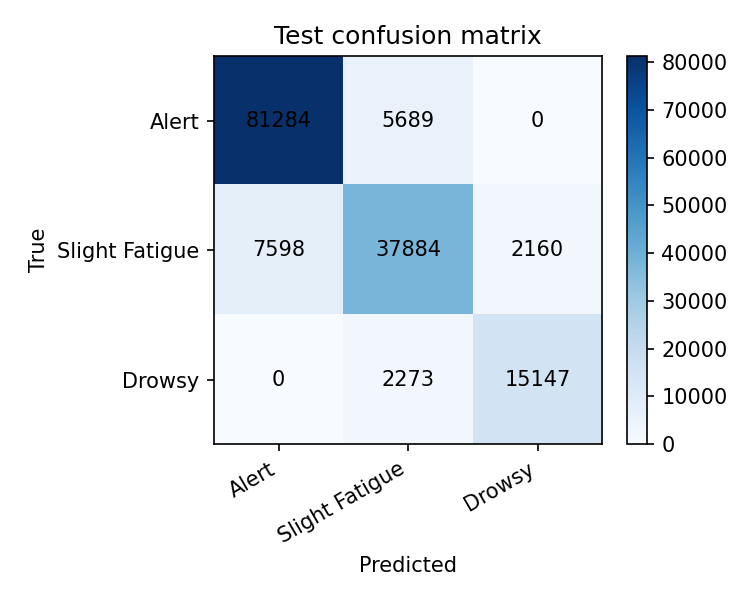
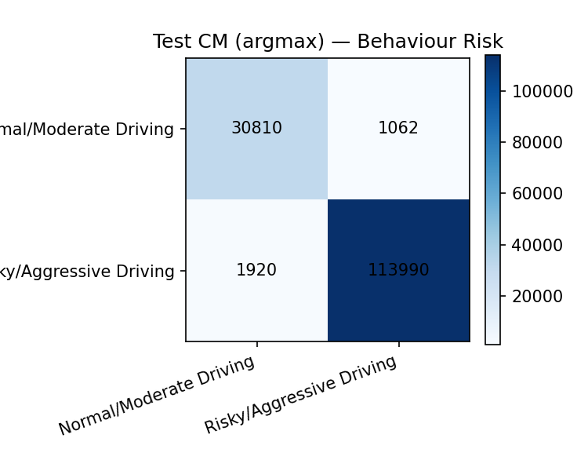
Physiology uses heart rate, heart-rate variability, respiration and two skin-conductance channels at 15.5 Hz, from PhysioNet drives, with drives 12 and 13 held out. CAN uses ten OBD channels from three drivers, one session each, with driver 3 held out. A cross-corpus fusion that zipped these datasets by rank reached a high accuracy against a vision-stratum label. That experiment has no shared driver and no shared clock, so it is not reported here as a fatigue result.
What the running system actually does
The React dashboard talks to a FastAPI fatigue module. The webcam is the only live sensor. The model in that path is the deployment checkpoint, trained on all four subjects after the subject-out study.
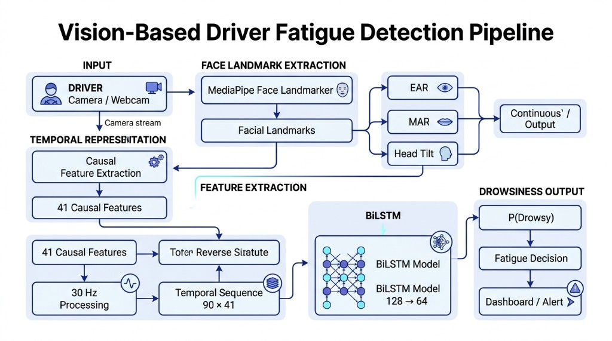
Reading the vision path
The browser sends EAR, MAR and head tilt from MediaPipe. The API places them on a 30 Hz grid, builds 41 causal features, and scores a 90×41 window with the BiLSTM. The model returns a continuous P(Drowsy). The stored diagnostic threshold of 0.94 is not applied as a live class. Alerts come from the fused score and the persistence gates, and only after a face has been present long enough to fill the window.
How the score is combined
When all three values are present, the overall score is 0.60 times vision, 0.30 times physiology and 0.10 times CAN monotony. If one is missing, that term is left out and the remaining weights are rescaled so they still sum to one.
| Signal | Weight | Role in the prototype |
|---|---|---|
| Vision P(Drowsy) | 0.60 | Required before the decision engine will escalate |
| Physiology P(class 1) + P(class 2) | 0.30 | Replay score. Slight fatigue and drowsy both count as non-alert |
| CAN driving-context monotony | 0.10 | How steady the replayed driving window is. Not the behaviour-model probability |
When an alert is allowed
One high window is not critical. The score has to stay at or above the gate for the whole hold time. If the face disappears, the engine clears the timers and will not escalate.
| State | Score gate | Hold |
|---|---|---|
| Early fatigue | 0.50 | 5 seconds |
| High fatigue | 0.80 | 8 seconds |
| Critical fatigue | 0.98 | 15 seconds |
S = (0.60 V + 0.30 P + 0.10 C) / (0.60 + 0.30 + 0.10)
When every signal is present. Missing signals drop out of both the numerator and the denominator.
- Only the webcam is live. Physiology replays held-out drives. CAN replays a held-out driver file.
- If a signal is missing, its weight is dropped and the remaining weights are divided by their new total. Vision is never filled in.
- The stored deployment threshold 0.94 is a validation diagnostic. The live path does not turn P(Drowsy) into a class with it.
- The decision thresholds were chosen for a vision probability and have not been re-fit on the fused score.
- The deployment checkpoint was trained on all four subjects after the subject-out study. Its validation ROC-AUC of 0.989 is not the research result.
What the evaluation showed
Subject-out vision results, kept apart from the deployment checkpoint and from the replayed signals.
Which vision representation ranked higher
| Track | Mean ROC-AUC | Mean PR-AUC | Mean macro-F1 |
|---|---|---|---|
| A′ landmark BiLSTM | 0.932 | 0.954 | 0.710 |
| B′ MobileNetV2 CNN | 0.644 | 0.668 | 0.479 |
| C′ CNN + BiLSTM | 0.586 | 0.615 | 0.406 |
Landmark features led on every held-out subject. The CNN-plus-BiLSTM was last. That ordering is why the research model moved to landmarks, and why the embedding sequence stayed a negative result.
Vision V2 leave-one-subject-out
| Metric | Mean | Lowest fold | Highest fold |
|---|---|---|---|
| Accuracy | 0.756 | 0.616 | 0.914 |
| Drowsy recall | 0.662 | 0.238 | 0.909 |
| ROC-AUC | 0.898 | 0.722 | 0.975 |
| PR-AUC | 0.926 | 0.840 | 0.978 |
| Macro-F1 | 0.738 | 0.553 | 0.912 |
The mean ROC-AUC of 0.898 is the research summary for the causal BiLSTM. The spread is large, and the window audit limits how those 90 steps can be described. The deployment validation ROC-AUC of 0.989 is a checkpoint diagnostic on mixed subjects. It is not this table.
Research journey
- May 2026Separate modality models
Physiology and CAN transformers were scored on their own group splits. A landmark bake-off on the vision features kept the BiLSTM because it had the highest drowsy recall on that session split.
- 10 Jul 2026Dataset check
Verification counted 66,521 frames, four subjects, and the alert and drowsy totals used on this page.
- 14 Jul 2026Frame CNN baseline
MobileNetV2 leave-one-subject-out finished at accuracy 0.560 and ROC-AUC 0.644. The report says it is not yet suitable.
- 18 Jul 2026Subject and embedding study
Embeddings clustered by person. Linear probes stayed weak. The study marked the frame CNN and the embeddings as not ready.
- 19–25 Jul 2026Temporal CNN track closed
A BiLSTM on the embeddings did not beat the frame CNN. The decision file records that temporal modelling did not improve.
- 21 Aug 2026Scaler leak
The first landmark table had been scaled on every row, including future test subjects. A retrain on the same session split dropped accuracy from 0.628 to 0.591.
- 22 Aug 2026Matched subject-out comparison
On ROC-AUC the landmark model led the frame CNN and the CNN-plus-BiLSTM for every held-out subject.
- 29 Aug 2026Vision V2 and a separate checkpoint
Causal 30 Hz features and a four-fold subject-out run were reported. A second model, trained on all four subjects, was saved for the application only.
- 30 Aug 2026Prototype audit
The running app was checked against the code: live webcam vision, replayed physiology and CAN, and the 0.60 / 0.30 / 0.10 fusion.
- After 30 Aug 2026Window-construction audit
A later read of the landmark table found that a 90-step window often mixes more than one original clip. Subject hold-out still holds. The three-second single-clip reading does not.
Limitations and next steps
- Four acted subjects. The result does not extend to a fleet, a night highway, or a clinical fatigue scale.
- Subject 006 contributes 6,739 frames and three conditions. Subject 005 contributes 21,933. The folds are not equal workloads.
- V2 thresholds swing from 0.02 to 0.98. Subject 001 has ROC-AUC 0.959 and drowsy recall 0.238 at the validation threshold.
- 54.62% of reconstructed 90-step windows mix more than one original clip. They are not a clean 3-second recording.
- No live webcam accuracy is reported. A working demo is not a test set.
- Physiology has no independent fatigue label. The model is scored against a rule built from its own inputs.
- CAN is a behaviour classifier on three drivers. The fusion term is a monotony score from that replay, not a drowsiness probability.
- The three datasets do not share a driver or a clock. Replayed signals are not same-person multimodal sensing.
- The deployment checkpoint and the 0.60 / 0.30 / 0.10 score are integration choices. They do not replace the subject-out tables.
Research documents
Mar 2026
Project proposal
R26-DS-013 individual proposal
Proposal Document_R26-DS-013_IT22071620.pdf
2026
Research paper
Driver fatigue and drowsiness detection
Adaptive Multi-Modal Driver Fatigue Detection.pdf
Oct 2026
Individual thesis
Adaptive Multimodal Fusion for Driver Fatigue Detection
Checklist
Progress Checklist 1 — Data Analysis Report
IT22071620_R26-DS-013_DataAnalysisReport.pdf
Excel
Progress Checklist 1 — Master Sheet (Excel)
Research master sheet containing project tracking and analysis information
IT22071620_MasterSheetOfResearch.xlsx